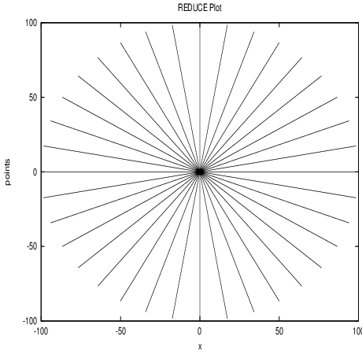
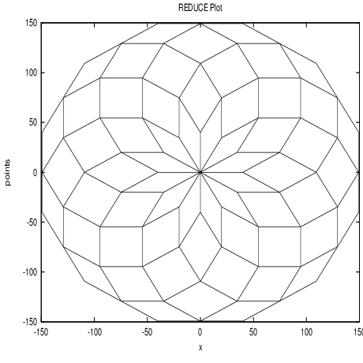
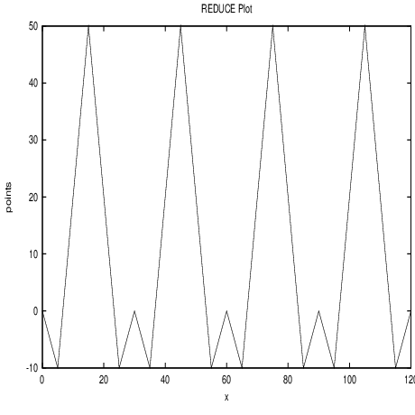
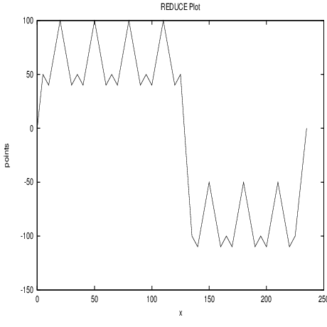
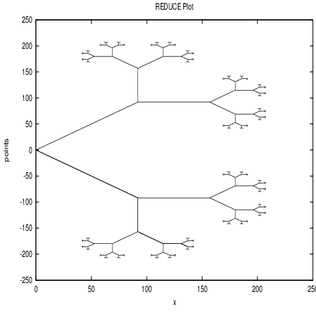
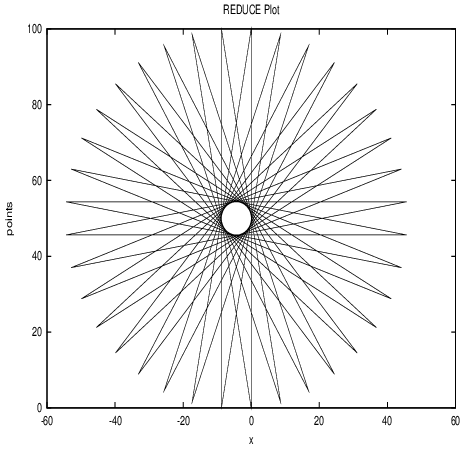
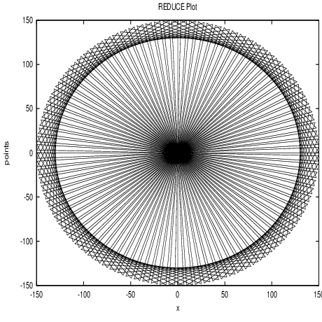
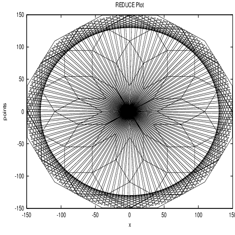

18.2 Turtle Graphics
18.2.1 Turtle Graphics
Turtle Graphics was originally developed in the 1960’s as part of the LOGO system, and
used in the classroom as an introduction to graphics and using computers to help with
mathematics.
The LOGO language was created as part of an experiment to test the idea that
programming may be used as an educational discipline to teach children. It
was first intended to be used for problem solving, for illustrating mathematical
concepts usually difficult to grasp, and for creation of experiments with abstract
ideas.
At first LOGO had no graphics capabilities, but fast development enabled the
incorporation of graphics, known as “Turtle Graphics” into the language. “Turtle
Graphics” is regarded by many as the main use of LOGO.
For references, see [PZ97, LM94].
Main Idea: To use simple commands directing a turtle, such as forward, back, turnleft,
in order to construct pictures as opposed to drawing lines connecting cartesian coordinate
points.
The ‘turtle’ is at all times determined by its state {x,y,a,p} – where x,y determine its
position in the (x,y)-plane, a determines the angle (which describes the direction the
turtle is facing) and p signals whether the pen is up or down (i.e. whether or not it is
drawing on the paper).
Some alterations to the original “Turtle Graphics” commands have been made in
this implementation due to the design of the graphics package gnuplot used in
REDUCE.
18.2.2 Turtle Functions
As previously mentioned, the turtle is determined at all times by its state {x,y,a}: its
position on the (x,y)-plane and its angle(a) – its heading – which determines the
direction the turtle is facing, in degrees, relative anticlockwise to the positive
x-axis.
User Setting Functions
-
setheading
- Takes a number as its argument and resets the heading to this number.
If the number entered is negative or greater than or equal to 360 then it is
automatically checked to lie between 0 and 360.
Returns the turtle position {x,y}
SYNTAX: setheading(𝜃)
-
turnleft
- The turtle is turned anticlockwise through the stated number of degrees.
Takes a number as its argument and resets the heading by adding this number
to the previous heading setting.
Returns the turtle position {x,y}
SYNTAX: turnleft(α)
-
turnright
- Similar to turnleft, but the turtle is turned clockwise through the
stated number of degrees. Takes a number as its argument and resets the
heading by subtracting this number from the previous heading setting.
Returns the turtle position {x,y}
SYNTAX: turnright(β)
-
setx
- Relocates the turtle in the x direction. Takes a number as its argument and
repositions the state of the turtle by changing its x-coordinate.
Returns {}
SYNTAX: setx(x)
-
sety
- Relocates the turtle in the y direction. Takes a number as its argument and
repositions the state of the turtle by changing its y-coordinate.
Returns {}
SYNTAX: sety(y)
-
setposition
- Relocates the turtle from its current position to the new cartesian
coordinate position described. Takes a pair of numbers as its arguments and
repositions the state of the turtle by changing the x and y coordinates.
Returns {}
SYNTAX: setposition(x,y)
-
setheadingtowards
- Resets the heading so that the turtle is facing towards the
given point, with respect to its current position on the coordinate axes. Takes
a pair of numbers as its arguments and changes the heading, but the turtle
stays in the same place.
Returns the turtle position {x,y}
SYNTAX: setheadingtowards(x,y)
-
setforward
- Relocates the turtle from its current position by moving forward (in
the direction of its heading) the number of steps given. Takes a number as
its argument and repositions the state of the turtle by changing the x and y
coordinates.
Returns {}
SYNTAX: setforward(n)
-
setback
- As with setforward, but moves back (in the opposite direction of its
heading) the number of steps given.
Returns {}
SYNTAX: setback(n)
Line-Drawing Functions
-
forward
- Moves the turtle forward (in the direction its heading) the number of
steps given. Takes a number as its argument and draws a line from its current
position to a new position on the coordinate plane. The x and y coordinates
are reset to the new values.
Returns the list of points { {old x,old y}, {new x,new y} }
SYNTAX: forward(s)
-
back
- As with forward except the turtle moves back (in the opposite direction
to its heading) the number of steps given.
Returns the list of points { {old x,old y}, {new x,new y} }
SYNTAX: back(s)
-
move
- Moves the turtle to a specified point on the coordinate plane. Takes a list
of two numbers as its argument and draws a line from its current position to
the position described. The x and y coordinates are set to these new values.
Returns the list of points { {old x,old y}, {new x,new y} }
SYNTAX: move{x,y}
Plotting Functions
-
draw
- This is the function the user calls within REDUCE to draw the list of
turtle commands given into a picture. Takes a list as its argument, with each
separate command being separated by a comma, and returns the graph drawn
by following the commands.
SYNTAX: draw{command(command_args),…,
command(command_args)}
Note: all commands may be entered in either long or shorthand form, and
with a space before the arguments instead of parentheses only if just one
argument is needed. Commands taking more than one argument must be
written with parentheses and arguments separated by a comma.
Other Important Functions
-
info
- This function is called on its own in REDUCE to tell user the current state of
the turtle. Takes no arguments but returns a list containing the current values
of the x and y coordinates and the heading variable.
Returns the list {x_coord,y_coord,heading}
SYNTAX: info() or simply info
-
clearscreen
- This is also called on its own in REDUCE to get rid of the last
gnuplot window, displaying the last turtle graphics picture, and to reset all
the variables to 0. Takes no arguments and returns no printed output to the
screen but the graphics window is simply cleared.
SYNTAX: clearscreen() or simply clearscreen
or cls
-
home
- This is a command which can be called within a plot function as well as
outside of one. Takes no arguments, and simply resets the x and y coordinates
and the heading variable to 0. When used in a series of turtle commands, it
moves the turtle from its current position to the origin and sets the direction
of the turtle along the x-axis, without drawing a line.
Returns {0,0}
SYNTAX: home() or simply home
Defining Functions
It is possible to use conditional statements (if … then … else …) and ‘for’ statements (for
i:=…collect{…}) in calls to draw. However, care must be taken – when using conditional
statements the final else statement must return a point or at least {x_coord,y_coord} if
the picture is to be continued at that point. Also, ‘for’ statements must include ‘collect’
followed by a list of turtle commands (in addition, the variable must begin counting from
0 if it is to be joined to the previous list of turtle commands at that point exactly, e.g. for
i:=0:10 collect {…}).
SYNTAX: (For user-defined Turtle functions)
procedure func_name(func_args);
begin [scalar additional variables];

(the procedure body containing some turtle commands)
return (a list, or label to a list, of turtle commands
as accepted by draw)
end;
For convenience, it is recommended that all user defined functions, such as
those involving if…then…else… or for i:=…collect{…} are defined
together in a separate file, then called into REDUCE using the in "filename"
command.
18.2.3 Global variables
The following variables are global, so it is advised that these are not altered
directly:
-
x_coord
- The current x coordinate.
-
y_coord
- The current y coordinate.
-
heading
- The current heading, as set by the setheading function.
18.2.4 Examples
The following examples are taken from the turtle.tst file. Examples 1, 2, 5 & 6 are simple
calls to draw. Examples 3 & 4 show how more complicated commands can be built
(which can take their own set of arguments) using procedures. Example 7 shows two
graphs drawn together.
Example 1: Draw 36 rays of length 100
draw {for i:=1:36 collect
{setheading(i*10), forward 100, back 100} };

Example 2: Draw 12 regular polygons with 12 sides of length 40, each polygon forming
an angle of 360/n degrees with the previous one.
draw {for i:=1:12 collect
{turnleft(30),
for j:=1:12 collect
{forward 40, turnleft(30)}} };

Example 3: A “peak” pattern - an example of a recursive procedure.
procedure peak(r);
begin;
return for i:=0:r collect
{move{x_coord+5,y_coord-10},
move{x_coord+10,y_coord+60},
move{x_coord+10,y_coord-60},
move{x_coord+5,y_coord+10}};
end;
draw {home(), peak(3)};

This procedure can then be part of a longer chain of commands:
draw {home(), move{5,50}, peak(3),
move{x_coord+10,-100}, peak(2),
move{x_coord+10,0}};

Example 4: Write a recursive procedure which draws "trees" such that every branch is
half the length of the previous branch.
procedure tree(a,b); %Here: a is the start length,
%b is the number of levels
begin;
return if fixpb and b>0 %checking b is a positive
%integer
then {turnleft(45), forward a,
tree(a/2,b-1), back a,
turnright(90), forward a,
tree(a/2,b-1), back a, turnleft(45)}
else {x_coord,y_coord}; %default:
%Turtle stays still
end;
draw {home(), tree(130,7)};

Example 5: A 36-point star.
draw {home(), for i:=1:36 collect
{turnleft(10), forward 100,
turnleft(10), back 100} };

Example 6: Draw 100 equilateral triangles with the leading points equally spaced on a
circular path.
draw {home(), for i:=1:100 collect
{forward 150, turnright(60),
back(150), turnright(60),
forward 150, setheading(i*3.6)} };

Example 7: Two or more graphs can be drawn together (this is easier if the graphs are
named). Here we show graphs 2 and 6 on top of one another:
gr2:={home(), for i:=1:12 collect
{turnleft(30),
for j:=1:12 collect
{forward 40, turnleft(30)}} }$
gr6:={home(), for i:=1:100 collect
{forward 150, turnright(60),
back(150), turnright(60),
forward 150, setheading(i*3.6)} }$
draw {gr2, gr6};
